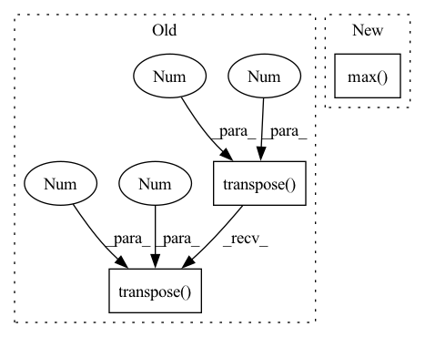

Pattern ID :38922

Before Change
mixture = mixture.detach().cpu().numpy()
estimated_amplitude = estimated_amplitude.detach().cpu().numpy()
mixture = mixture.transpose(2, 1, 0)
estimated_amplitude = estimated_amplitude.transpose(3, 2, 1, 0)
estimated_sources = norbert.wiener(estimated_amplitude, mixture, eps=eps)
estimated_sources = estimated_sources.transpose(3, 2, 1, 0)
estimated_sources = torch.from_numpy(estimated_sources).to(device, dtype)
return estimated_sources
After Change
ratio = estimated_sources_amplitude / estimated_sources_amplitude.sum(dim=0)
estimated_sources = ratio * mixture
norm = max(1, torch.abs(mixture).max() / 10)
mixture, estimated_sources = mixture / norm, estimated_sources / norm
estimated_sources = update_em(mixture, estimated_sources, iterations, eps=eps)
estimated_sources = norm * estimated_sources
In pattern: SUPERPATTERN
Frequency: 3
Non-data size: 3
Instances
Fragment ID: 110974141
Project Name: tky823/dnn-based_source_separation
Commit Name: d45a578a242ecb277ef7bdc5c9d6f75c4ad13521
Time: 2021-08-20
Author: 40362510+tky823@users.noreply.github.com
File Name: egs/musdb18/d3net/src/adhoc_driver.py
M Class Name: AnonimousClass
N Class Name: AnonimousClass
M Method Name: apply_multichannel_wiener_filter(5)
N Method Name: apply_multichannel_wiener_filter(4)
M Parent Class:
N Parent Class:
M File Name: egs/musdb18/d3net/src/adhoc_driver.py
N File Name: egs/musdb18/d3net/src/adhoc_driver.py
M Start Line: 398
M End Line: 414
N Start Line: 385
N End Line: 403
'>
Before Change
heatmap: np.ndarray = cmap(heatmap) // (N, H, W, C) TODO: linting problem
else: // cmap: [256, 3|4] uint8
assert isinstance(cmap, torch.Tensor) and cmap.shape[0] == 256
heatmap = cmap[(heatmap * 255).long()].transpose(1, 3).transpose(2, 3)
heatmap = heatmap.float() / 255
// Note that C==4 for most cmaps
heatmap = torch.as_tensor(heatmap.transpose(0, 3, 1, 2)) // (N, C, H, W)
return heatmap[0] if squeeze_flag else heatmap
After Change
assert cmap.shape[0] == 256 // cmap: [256, 3|4]
heatmap = cmap[(heatmap * 255).long()] // (N, H, W, C) uint8
heatmap = heatmap.transpose(1, 3).transpose(2, 3).float() // (N, C, H, W)
heatmap = heatmap / 255 if heatmap.max() > 1 else heatmap // (N, C, H, W) float
return heatmap[0] if squeeze_flag else heatmap
'>
Fragment ID: 110974415
Project Name: ain-soph/trojanzoo
Commit Name: 80e74988c8d77c00322fd1144f83d6ff4e5ee2cb
Time: 2020-12-31
Author: ain-soph@live.com
File Name: trojanvision/utils/__init__.py
M Class Name: AnonimousClass
N Class Name: AnonimousClass
M Method Name: apply_cmap(2)
N Method Name: apply_cmap(2)
M Parent Class:
N Parent Class:
M File Name: trojanvision/utils/__init__.py
N File Name: trojanvision/utils/__init__.py
M Start Line: 14
M End Line: 27
N Start Line: 15
N End Line: 29
'>
Before Change
Conducts the max-pooling operation on the hidden states.
batch_size, seq_length, hidden_size = hidden_states.size()
conved = hidden_states.transpose(1, 2)
conved = conved.transpose(0, 1)
states = (conved * mask).transpose(0, 1)
states += torch.ones_like(states)
pooled_states = F.max_pool1d(input=states, kernel_size=seq_length).contiguous().view(batch_size, hidden_size)
pooled_states -= torch.ones_like(pooled_states)
return pooled_states
After Change
batch_size, seq_length, hidden_size = hidden_states.size()
mask = mask.unsqueeze(2)
states = hidden_states * mask + mask * 100
pooled_states = torch.max(states, dim=1)[0]
pooled_states -= 100
return pooled_states
'>
Fragment ID: 110974425
Project Name: thu-keg/omnievent
Commit Name: deca3b2f494a538ebd7d8ad7692a16a5c709cc57
Time: 2022-12-20
Author: penghao20170136@163.com
File Name: OmniEvent/aggregation/aggregation.py
M Class Name: DynamicPooling
N Class Name: DynamicPooling
M Method Name: max_pooling(3)
N Method Name: max_pooling(3)
M Parent Class: nn.Module
N Parent Class: nn.Module
M File Name: OmniEvent/aggregation/aggregation.py
N File Name: OmniEvent/aggregation/aggregation.py
M Start Line: 186
M End Line: 191
N Start Line: 196
N End Line: 199